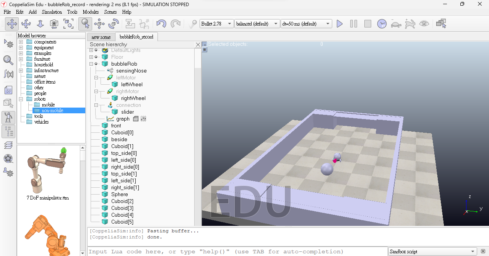

ag14 <<
Previous Next >> ag17
ag15
成員:41023154張韋翔、41023135林政蔚
倉儲:https://github.com/mdecd2023/2a-pj1ag15
網站:https://mdecd2023.github.io/2a-pj1ag15/content/index.html
-W9:目標是利用兩台 BubbleRob 雙輪車在一足球場景中進行對戰, 其中在雙方球門設置感測器, 雙方各有一名 BubbleRob 負責運球, 在規定時間內, 每進一球後, 即透過程式重新從球場中線發球重啟賽局. 其中各組必須設法配置計分板顯示比賽剩餘時間與比分.
建立球場:
微改球場:
兩側空位可能會導致球卡住，因此將其填起來。

新增感測器:
感測器-計分板:
function sysCall_init()
score1 = 0
sensor = sim.getObject('./sensor')
xml = [[
<ui title="Scoreboard" closeable="false" resizable="false" style="plastique">
<label text="Score:" style="* {background-color: #808080; color: #000000; font-size: 40px; font-weight: bold; padding: 5px; border-radius: 5px; }" id="10"/>
<label text="0" style="* {background-color: #FFF; color: #000000; font-size: 40px; font-weight: bold; padding: 5px; border-radius: 5px;}" id="30"/>
</ui>
]]
ui = simUI.create(xml)
simUI.setPosition(ui, 200,0, true)
bubbleRob = sim.getObject('/bubbleRob')
ball = sim.getObject('/ball')
bubbleRob2 = sim.getObject('/bubbleRob2')
initialPosition = sim.getObjectPosition(bubbleRob, -1)
initialOrientation = sim.getObjectOrientation(bubbleRob, -1)
initialPosition2 = sim.getObjectPosition(bubbleRob2, -1)
initialOrientation2 = sim.getObjectOrientation(bubbleRob2, -1)
initialballPosition = sim.getObjectPosition(ball, -1)
initialballOrientation = sim.getObjectOrientation(ball, -1)
end
function sysCall_actuation()
--simUI.setLabelText(ui, 30, tostring(sim.getFloatSignal("myVariable")))
result=sim.readProximitySensor(sensor)
if(score1<5)then
if(result>0)then
score2 = score1+1
simUI.setLabelText(ui, 30, tostring(score2))
sim.setObjectPosition(bubbleRob, -1, initialPosition)
sim.setObjectOrientation(bubbleRob, -1, initialOrientation)
sim.setObjectPosition(bubbleRob2, -1, initialPosition2)
sim.setObjectOrientation(bubbleRob2, -1, initialOrientation2)
sim.setObjectPosition(ball, -1, initialballPosition)
sim.setObjectOrientation(ball, -1, initialballOrientation)
score1=score2
end
else
sim.pauseSimulation()
end
end
計分板+計數器:
function sysCall_init()
score1 = 0
count = 60000
sensor = sim.getObject('./sensor')
xml = [[
<ui title="Scoreboard" closeable="false" resizable="false" style="plastique">
<label text="60:00.0" style="* {background-color: #F00; color: #FFF; font-size: 32px; font-weight: bold; padding: 4px; border-radius: 4px;}" id="10"/>
<label text="p1 Score:" style="* {background-color: #808080; color: #000000; font-size: 40px; font-weight: bold; padding: 5px; border-radius: 5px; }" id="20"/>
<label text="0" style="* {background-color: #FFF; color: #000000; font-size: 40px; font-weight: bold; padding: 5px; border-radius: 5px;}" id="30"/>
</ui>
]]
ui = simUI.create(xml)
simUI.setPosition(ui, 0, 0, true)
bubbleRob = sim.getObject('/bubbleRob')
ball = sim.getObject('/ball')
initialPosition = sim.getObjectPosition(bubbleRob, -1)
initialOrientation = sim.getObjectOrientation(bubbleRob, -1)
initialballPosition = sim.getObjectPosition(ball, -1)
initialballOrientation = sim.getObjectOrientation(ball, -1)
end
function sysCall_actuation()
result=sim.readProximitySensor(sensor)
if(score1<5)then
if(result>0)then
score2 = score1+1
simUI.setLabelText(ui, 30, tostring(score2))
sim.setObjectPosition(bubbleRob, -1, initialPosition)
sim.setObjectOrientation(bubbleRob, -1, initialOrientation)
sim.setObjectPosition(ball, -1, initialballPosition)
sim.setObjectOrientation(ball, -1, initialballOrientation)
score1=score2
end
end
if count > 0 then
count = count - 1
local minutes = math.floor(count / 60)
local seconds = count % 60
local timeStr = string.format("%d:%02d", minutes , seconds)
simUI.setLabelText(ui, 10, timeStr)
simUI.setLabelText(ui, 30, tostring(score1))
else
sim.pauseSimulation()
end
end
新增計分器和計時器:
遊玩影片:
ag14 <<
Previous Next >> ag17